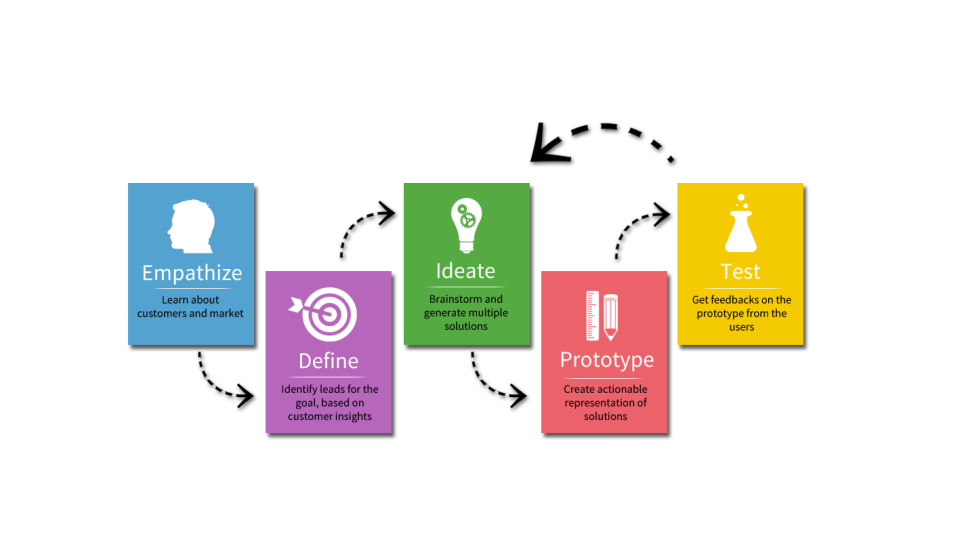
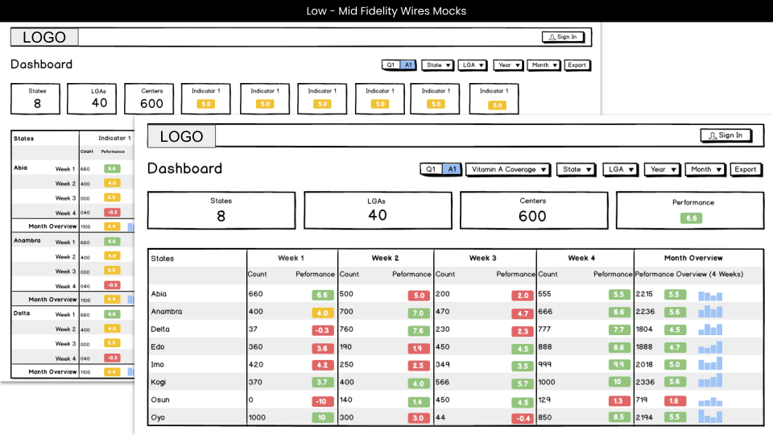

<style>
* {box-sizing: border-box}
body {font-family: Verdana, sans-serif; margin:0}
.mySlides {padding-left: ;
  padding-right: 4em;}
img {vertical-align: middle;}
h2.sub-head{
  color: #000 !important;
  font-size: 22px !important;
  font-weight: 400 !important;
  margin-top: 3em;
}
.list-style{
  padding-left: 2em;
}
h4, span.strong{
  font-weight: bold !important;
}
.back-container{
  margin-top: 4em;
  width: 80%;

}
.case-studies-back-button{
  text-decoration: none; padding: .5em; border-radius: 7px; font-size: 15px; color: #000; background-color: ; padding: 1em; border:1px solid #000;
}

/* On smaller screens, decrease text size */
@media only screen and (max-width: 300px) {
  .prev, .next,.text {font-size: 11px}
}
</style>
<header id="home-header" style="background-image: url({{ site.baseurl }}{{ site.sidebar_image }});">
  <div class="top-container" >
    <div class="container">
       <div class="style-element">
        <!--<br>-->
        <!---->
          <h1 style="font-family:lobster">{{ site.title }} <span style="display: none;" class="mobile-title"> &middot; Sr/Lead UX </span></h1>
          <h3 class="style mobile-header" style="margin-bottom: 1.5em;">Senior UX &middot; Lead UX  &middot; Principal UX </h3>
          <h3 class="style">
            <a href="index.html" class="side-menu"> Home</a> 
            <a href="about.html" class="side-menu"> Skills and Tools</a>
            <a href="case-studies.html" class="side-menu " style="font-weight: bold;"> Case Studies</a> 
            <a href="https://www.jmcleod.me/images/resume-branding.pdf" target="_blank" class="side-menu"> Resume Brand</a>
            <!--<a href="#" > Contact Me</a><br>-->
          </h3>
        </div>
    </div>
  </div>
</header>
<article>
  <div class="container">
     <div class="portfolio content" >
        <h2 class="posts">MG Case Study</h2>
        <hr>
        <h2 class="sub-head">Project Overview</h2>
          <p>
            The MG Analytical Dashboard is a comprehensive web and mobile application designed to provide an in-depth view of health center performance across a country. Tailored to meet the needs of health professionals, administrators, and policy makers, this tool helps users track key metrics on a regional, state, and individual health center level.
          </p>
          <div class="portfolio-images content-child">
            <div class="mySlides">
              
            </div>
          </div>
          <div class="content-child">
            <h2 class="sub-head">Roles & Responsibilities:</h2>
            <ul class="list-style">
              <li>UX Design Lead</li>
              <li>User Research</li>
              <li>Wireframing & Prototyping</li>
              <li>Usability Testing</li>
            </ul>
            <h2 class="sub-head">The Problem</h2>
            <p>
              Health administrators and policymakers need a centralized, data-driven solution to assess the performance of health centers across different regions, states, and individual facilities.
            </p>
            <h2 class="sub-head">The Solution</h2>
            <p>
              The MG Analytical Dashboard provides an intuitive web and mobile interface for tracking key performance indicators (KPIs) of health centers at various levels, enabling data-driven decision-making.
            </p>
            <h2 class="sub-head">My UX Process</h2>
            <p>
              In order to create a well-defined User Experience (UX) process to ensure that products are user-centered, intuitive, and effective. I incorporated strategy, research, design, testing, and iteration.
            </p>
            <div class="mySlides">
              
            </div>
            <h2 class="sub-head">Strategy & Research</h2>
            <h4>Conducted interviews with key stakeholders, including:</h4>
            <ul class="list-style">
                <li>Healthcare administrators (to understand their data needs)</li>
                <li>Health center managers (to assess workflow challenges)</li>
                <li>Policy makers (to identify required metrics for decision-making)</li>
              </ul>
              <h4>Key Findings:</h4>
              <ul class="list-style">
                <li>Users needed customizable data views to focus on relevant KPIs.</li>
                <li>Mobile accessibility was crucial for on-the-go insights.</li>
                <li>Complex data had to be visualized in a simplified and digestible manner.</li>
                <li>Performance comparisons across states and centers were a priority.</li>
              </ul>
            <br>
            <div class="mySlides">
              <h2 class="sub-head">Key Personas</h2>
              
            </div>
        </div>
        <div class="content-child">
          <h2 class="sub-head">Design Solutioning Specification</h2>
          <div class="content-child">
            <h2 class="sub-head">Low-Medium Fidelity</h2>
            <p>
              To streamline the design process and gather early user feedback, I utilized low to medium-fidelity wireframes to visualize and validate core functionalities before high-fidelity design and development.
            </p>
            <div class="mySlides">
              
            </div>
          </div>
          <div class="content-child">
            <h2 class="sub-head">High Fidelity Prototype</h2>
            <p>
              To bridge the gap between design concepts and final implementation, I utilized high-fidelity prototypes to create realistic, interactive experiences that closely resembled the final product.
            </p>
            <h4><strong>Design Approach:</strong></h4>
            <ul style="padding-left: 2em;">
                <li><span class="strong">Color Coding:</span> Used green, yellow, and red to indicate positive, warning, and critical performance levels. </li>
                <li><span class="strong">Data Hierarchy:</span> Displayed high-level KPIs first, with the ability to drill down. </li>
                <li><span class="strong">Mobile Responsiveness:</span> Optimized layouts for mobile screen sizes specifically tablets. </li>
            </ul>
            <br>
            <div class="mySlides">
              
            </div> <br>
            <h4>Usability Testing & Iterations</h4>
            <ul class="list-style">
                <li>Conducted usability tests with 10 participants (administrators, health managers).</li>
                <li>Collected feedback on navigation, data clarity, and feature usability.</li>
            </ul>
            <h4>Key Insights & Iterations</h4>
            <ul class="list-style">
                <li><span class="strong">Users wanted quick filters for selecting specific health centers easily → </span>Added a defined filters.</li>
                <li><span class="strong">Some users found the data overwhelming → </span>Introduced tooltips & guided walkthroughs.</li>
                <li><span class="strong">The mobile version needed better visualization for smaller screens → </span>Optimized charts and improved tap targets.</li>
            </ul>
            <h4>Impact</h4>
            <ul class="list-style">
              <li>Reduced decision-making time for administrators by 40%.</li>
              <li>Increased adoption rate among health officials due to improved usability.</li>
              <li>Higher engagement from mobile users due to enhanced mobile experience.</li>
            </ul>
          </div>
          <div class="back-container">
            <a href="case-studies.html" class="case-studies-back-button">
               < Back to Portfolio Case Study List
            </a>
          </div>
        </div>
          
    </div> 
    <br>
   

      <!-- <a class="mybutton" href="https://www.jmcleod.me/images/resume-branding.pdf" target="_blank"> View Resume Brand</a> -->

  </div> 


</article>


